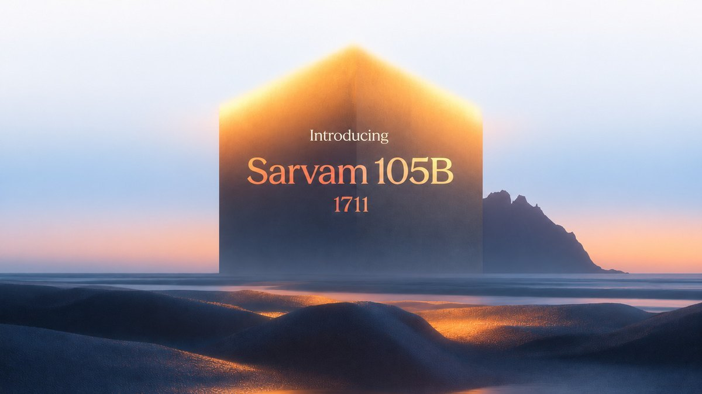

AI
Brief
Sunday edition
Banks bar outside AI agents from your accounts
Also: banks buy agents of their own, an open model for agents fits one card, OpenAI's chief scientist wants every lab measured the same way, and attack agents find a new flaw alone.
What matters today
Banks shut agents out
Wells Fargo, Chase, Citibank and PNC restrict third-party AI agents.
- From November 24: Wells Fargo's new agreement says requests through an outside AI tool may be treated as yours, and it may block such tools.
- Also closing: Chase treats an agent that signs in with your credentials as unauthorized, Amazon blocked Meta's Muse from buying, United from booking flights.
Why it mattersSigning in as the user, the way consumer agents got things done, is being shut off, and the user pays for the mistakes. Access now comes from a deal, and the banks' own agents have one.
Arva sells agents to banks
Arva AI raises $20M for agents that make banks' back-office decisions.
- November 17: a Series A led by Arthur Ventures. Its agents handle a decision end to end in financial-crime checks, onboarding, payments and lending; people set the policy.
- Arva's figures: live at a top-10 US bank, an S&P 500 payments company and Wise; its own research model beat general-purpose models on accuracy by 13% in its tests.
Why it mattersThe banks shutting out customers' agents are buying agents for their back office. In banking, agent makers win by selling to the bank and explaining each decision to its regulator.

Sarvam opens 105B weights
Sarvam releases open weights for a 105B agent model.
- One card: the 4-bit build is 65 GB and runs on a single 96 GB RTX PRO 6000 Blackwell; the full-precision build is 198 GB. Context is 160K tokens.
- Sarvam's scores: IFEval 96.5, Arena-Hard v2 76.6, and a conversational agent average of 73.9 against 74.0 for Gemini 3.5 Flash-Lite.
Why it mattersWeights good enough for agent work now fit one workstation card, so a team that cannot send data out has a real option. What separates it from a hosted model is the serving bill, not capability.
OpenAI's shared yardstick
OpenAI's chief scientist proposes one measure of AI progress for every lab.
- OpenAI's figures: log perplexity, how well a model predicts the next word, fell from about 0.99 for GPT-3.5 to about 0.91 for GPT-4, with the big jumps in ability below 0.8.
- The ask: labs agree voluntary limits on how fast they push ahead, tied to safety milestones. The post says the next big pretraining advance could come as soon as 2027.
Why it mattersWhoever sets the measure sets what counts as progress. A number every lab reports is also the number a rule can be written around, which is a cheaper fight to win than a law.
A hacking agent finds a flaw
Amazon details attack agents that found an unknown flaw on their own.
- November 20: Amazon found an open-source attack-agent framework, Cairn, running without a password on a server used by a group it ties to China with moderate confidence.
- Speed: about 11 minutes passed from mapping a medical imaging app's interface to writing files on it, through a flaw nobody knew of; it later gave full control.
Why it mattersFinding and using a new flaw is now work an agent does on its own, so the gap between a bug existing and being used shrinks to minutes. Any product with an open interface is on that clock.
Also in the news
- Governors on AI rules: the National Governors Association's bipartisan council asked Congress for federal AI rules that keep state powers in place.
- AI server prices: Dell, HPE, Lenovo and Supermicro reportedly raised prices by up to 45% after contracts were signed, with memory costs given as the reason.
- Tesla's AI5 chip: Musk said AI5 goes to the Optimus robot and cars stay on AI4, and that AI4 now costs twice as much because of memory and storage prices.
- A medical model in 4 bits: Ant Group published 4-bit weights of its LingSante 3.1 flash medical model under an MIT licence, for research only, served on four H20-3e cards.
- Hy4 on Chinese GPUs: MetaX added support for Tencent's Hy4 weights on its C-series GPUs; the published results come from a 32-GPU test setup.
- Humanoid robot code: nine organizations formed an OpenAtom committee to coordinate shared software, models, data and governance for humanoid robots.
- A 10,000-card plan: Qingmao Intelligence targets a 10,000-card Ascend 950DT network in 2027, with a 100,000-card goal after that.
- AI music pulled: the makers of The Binding of Isaac: Repentance Plus removed AI-made music from the game after players review-bombed it on Steam.
- Perplexity Monitor API: November 16; watches search topics, or up to 10 pages, on a schedule and sends an agent only the changes that pass its checks; $1 per 1,000 runs.
- Chrome's copy of the web: November 19; Google tests its browsing agent on thousands of generated sites served at real addresses, so tests never touch the live web.
- Bell Canada breach: November 20; Bell says an agentic attacker got into a test copy of its network-ordering system on November 17 and took business contact details.
- Ideogram 4.6: November 19; an image model for precise edits over several turns, with output up to 4K.
- Microsoft-Decision-1.1: November 17; generally available in Foundry, a small model for routing and yes-or-no checks, twice as fast as the first and $0.042 per million input tokens.
- Copilot Studio to Joule: November 20; Copilot Studio agents can hand SAP work to SAP's Joule agents over the A2A protocol, keeping identity and policies.
- Claude for Manufacturing: November 12; a plugin with 17 skills and connectors to Autodesk Fusion, Infor, Microsoft 365 and NetSuite, for Team and Enterprise plans.
- MedChemBench: November 20; OpenAI's 99-problem drug chemistry test; GPT-6.2 Astra scored highest at 84.5%. OpenAI says it does not show models can find new drugs.